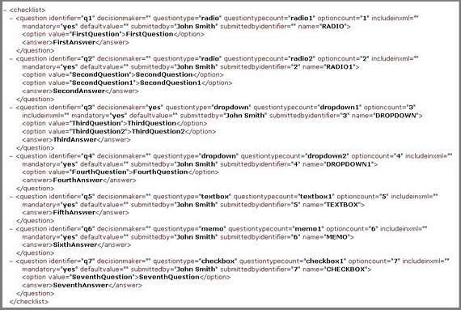
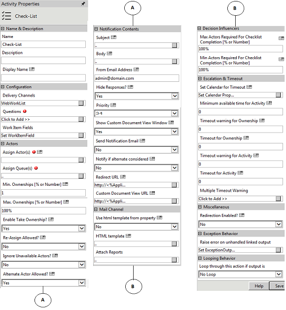
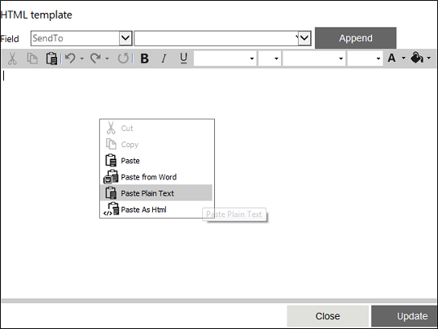

No
Activity Description:
The Checklist Activity is incorporated in the AVEVA Work Tasks Workflow process design to send questions that need to be answered by actors in a workflow. These questions can be sent with a Text box, Memo, Checklist, Drop-down, or Radio Button to capture the answers provided by actors.
Application Scenarios:
A typical application scenario could be a Technical Support Request Workflow Process, which will have a set of radio buttons on the Request Form which the customer can use to select the Support option applicable to him/her. A Checklist activity can be used in the workflow to display these radio buttons and retrieve the customer selection information.
Workflow Variables for Checklist:
Steps to define variables for use in the Checklist activity
This section describes how to define variables for use in Checklist activities. It gives the syntax for creating the variables and typical examples for different cases.
Variables for capturing WorkItemIds
The Work Item Id's for the Checklist work item can be retrieved using a variable of type Array, with the following syntax:
'^'+CurrentActivity.Name+'WorkItemIds'.
For example, ^ReviewDocumentWorkItemIds.
Variables for capturing All Actors' Details
The details of the actor(s) to whom the Checklist work item gets assigned, can be accessed by declaring a variable of type array with the following syntax:
'^'+CurrentActivity.Name+'ActingUsers'
For example, ^ReviewDocumentActingUsers.
Variables for capturing Responding Actors' Details
The details of the actors' submitting the Checklist response, can be accessed by declaring a variable of type resource with the following syntax:
'^'+HWSActivity.ActivityName+'RespondingUser'
For example, ^ReviewDocumentRespondingUser.
This variable stores the responded user information. If it is more than one user, it will retrieve the last user details.
Note: For single user, you can declare this variable as Resource type. If task is assigned to multiple users and to get all responded users information, then the variable has to be declared as Array.
Variables for capturing Comments
Comments entered in a Checklist can be retrieved using a variable with the following syntax:
'^'+_HWSActivity.CurrentActivity.Name+'CommentCheckList'.
For example, ^ReviewDocumentCommentCheckList.
(To add a comment field to the Checklist HTML page create a Text box control in Checklist HTML pages with the name "txtcomment". The HTML template pages for the Checklist activity can be found under the [AVEVA Work Tasks Installed Path]\WorkflowElements\Default\en-US\Activities\Activity folder.)
Variables for capturing Checklist Questions and Answers in HTML format
Question and answers entered in the Checklist can be accessed in HTML format by using a variable with the following syntax:
'^'+CurrentActivity.Name+'AnswersHTMLCheckList'
For example, ^ReviewDocumentAnswersHTMLCheckList.
Variables for capturing Checklist Questions and Answers in XML format
Question and answers entered in the Checklist can be accessed in XML format by using a variable with the following syntax:
'^'+ CurrentActivity.Name+'AnswersXMLCheckList'
For example, ^ReviewDocumentAnswersXMLCheckList.
Variables for assigning queue system variable
To assign queues instead of setting the queue through Assign Queue property, add a variable with a name prefixed by '^', with the following syntax:
"^"+ CurrentActivity.Name + "_QueueVariable".
For example, if the activity name is 'Approval1' then declare the variable as ^Approval1_QueueVariable in the Start activity with the Type as String. Using the "Update Variable" activity, assign the queue-id (GUID) for this variable in the Workflow.
To assign multiple queues, specify the queue-ids with semicolon (;) as the separator. Skelta.HWS.Queue.QueueCollection class can be used to retrieve queue information.
Variable for Queue Acting Users
You can declare an Array type variable to get updated information about the name of the actor to whom an activity gets assigned from a queue.
In the Workflow Variables, define the variable in the following format:
^+CurrentActivityName+'QueueActingUsers'
Ex: ^HRFormQueueActingUsers
HRForm is the activity name.
For example the value of the user who acts on the HRForm activity will be stored in the variable. The Approval1 task will be assigned to the same user.
Variable for storing timeout warning value
Suppose if you want to store the timeout warning value for Checklist activity in your workflow. The naming convention for the system variable to be declared is
^<ActivityName>ResponseByWarningTimeout
The value returned by the variable will be in UTC format. For multiple user scenarios the highest timeout value calculated for user will be available in the variable.
Note: Multiple timeout warnings cannot be tracked using this feature.
Retrieving Stored Checklist Data:
When an actor has acted upon the checklist, it is marked as completed and the details are stored in XML format in the database. It can be retrieved as SELECT DATA FROM SKWorkItem SKW, SKWorkItemData SKWD WHERE
SKW.DataId = SKWD.Id AND SKW.Id = <WorkItemId>.
See the XML file to know how the details are stored in the database.
The following image shows the format in which the Checklist Details are stored in the XML file:

Activity Properties:
The Checklist activity has to be configured by specifying appropriate values for the different properties in the Activity Properties area. The Activity Properties can be accessed by clicking on the Activity Properties tool in the Tool Bar or by selecting the appropriate option from the right click menu for the Checklist activity. The Activity Properties are organized under the following groups of related properties.

Name & Description
You can use these properties to specify the name and description for the activity.
Name - This property can be used to specify a name for the activity.
Property Type: Optional (This property needs to be set only if necessary.)
Description - This property specifies a brief description to be displayed for the activity.
Property Type: Optional (This property needs to be set only if necessary.)
Display Name - This property specifies the name to be displayed for the work item in the Work items list.
Property Type: Optional (This property need not be set if the display name is already configured in the Actions.XML. The name entered here overrides any display name that is configured for this activity in the Actions.xml file.)
Configuration
The properties in the Configuration group have been described below. You can use these properties to configure the functionality of the activity.
Delivery Channels - This property is used to specify the delivery channels to deliver the activity to the assigned actor(s). Multiple channels can be specified giving the actor(s) different options to act on the work item.
Property Type: Optional (This property needs to be set only if necessary.)
Steps to set the Delivery Channels property
See CheckList - Delivery Channels for a detailed description of the Delivery Channels property window.
Questions - This property is used to define the Question and Answer Types in a Checklist Activity; the Answer Types provided are Textbox, Memo, Checklist, Drop-down, and Radio button.
Property Type: Mandatory (This property must be set for the activity to be used in the workflow.)
Attributes of the Questions property
Steps to set the Questions property
The first window is displayed again when you click on the Finish button. It shows the newly added question(s). You can modify or delete the new question or add more new questions. If you do not wish to perform any more operations, click Close to exit this window.
See CheckList - Questions for a detailed description of the Questions property windows.
Work Item Fields - This property is used to add the Work Item Fields to be used to display application data as well as value in variables and content in the Work items list when this activity is executed.
Property Type: Optional (This property needs to be set only if necessary.)
Steps to set the Work Item Fields property
See CheckList - Work Item Fields for a detailed description of the Work Item Fields property windows.
Actors
The properties in the Actors group have been described below. You can use these properties to specify the actors who will work on the activity and related properties.
Assign Actor(s) - This property is used to specify the actor(s) who has to take up the Checklist activity. It is tagged with the Ignore Unavailable Actors property which in turn is tagged with the Alternate Actor Allowed property. This will be explained in detail later.
Property Type: Mandatory (This property must be set if the activity is to be assigned to any actor(s).)
Steps to set the Assign Actor(s) property
See CheckList - Assign Actor(s) for a detailed description of the Assign Actor(s) property window.
See the Using XML Variables section in the About XML Variables topic for details on how to use the XML Variables to build the expression.
Assign Queue(s) - This property specifies the queue(s) to which the Checklist activity is to be assigned.
Property Type: Mandatory (This property must be set if the activity is to be assigned to any Queue(s).)
Steps to set the Assign Queue(s) property
See CheckList - Assign Queue(s) for a detailed description of the Assign Queue(s) property window.
Min. Ownerships [% or Number] - This property, can be specified as a number or percentage, is the minimum number of actors who should take ownership of the Checklist request. This property is related to the 'Timeout warning for Ownerships' and 'Timeout for Ownership' properties.
To illustrate, when 'Timeout for Ownerships' is reached, the activity first checks if the ownership count is less than 'Min.Ownerships' (if it is set).
Property Type: Optional (This property needs to be set only if necessary. It is useful in group response scenarios.)
Max. Ownerships [% or Number] - This property, which can be specified as a number or percentage, is the maximum number of actors who should take ownership of the Checklist request.
Property Type: Optional (This property needs to be set only if necessary. It is useful in group response scenarios.)
Enable Take Ownership? - If this property is set to Yes, then the actor is provided with a Take Ownership option in the Work items list to take ownership of the task. If you are not required Take Ownership option in the Work items list, then set this property as No.
Note: By default, this property is set as Yes.
Property Type: Optional (This property needs to be set only if necessary.)
Steps to set the Enable Take Ownership? property
Re-Assign Allowed? - If this property is set, then the actor is provided with a Re-Assign option. Using this the actor can re-assign the work item to another actor.
Property Type: Optional (This property needs to be set only if necessary.)
Ignore Unavailable Actors? - This property provides the following options - Yes, Yes - holidays excluded and No.
Property Type: Optional (This property needs to be set only if necessary.)
Alternate Actor Allowed? - This property is set to assign a particular task to an alternate actor in the absence or unavailability of any actor.
Property Type: Optional (This property needs to be set only if necessary.)
Notification Contents
The properties in the Notification Contents group have been described below. You can use these properties to specify the content used to notify actors about the activity.
Subject - This is the subject of the Checklist work item. The subject can be customized for each actor.
Property Type: Optional (This property need not be set. If it is not set, the default subject line from the Actions.XML file is displayed.)
Steps to set the Subject property
See CheckList - Subject for a detailed description of the Subject property window.
Body - This is the actual message of the Checklist sent to the actor(s). The body can be customized for each actor. There is an Enterprise Console Explorer(plug-in) edit icon in the Body property window to get the Work item details URL. See Enterprise Console Control (EC Plug-in) for more information.
Property Type: Optional (This property need not be set.)
Steps to set the Body property
See CheckList - Body for a detailed description of the Body property window.
From Email Address? - This property is used to specify the email address from which notification messages will be sent for the activity.
Property Type: Optional (This property needs to be set only if necessary. If it is not set, the default value in Actions.XML will be used.)
Hide Responses? - If this property is set to 'No', then actors can see the responses of other actors in a group response scenario. To view these responses, such as ownerships and action, select the 'Take Ownership' option. This will open a new pop up with the responses of other actors who have taken ownership.
Property Type: Optional (This property needs to be set only if necessary. It is useful in group response scenarios.)
Priority - This property is set to indicate the priority of the checklist request. Enter the values 0-33 to set as Low, 34-66 for Medium, or 67-99 for High. The default value is set to 34.
Property Type: Optional (This property needs to be set only if necessary.)
Show Custom Document View Window - If this property is set to 'Yes', then the Custom Document View Window will be shown to the users in their Work Item Lists.
Property Type: Optional (This property needs to be set only if necessary.)
Send Notification Email - If this property is set to 'Yes', then notification emails will be sent to the actors. If it is set to 'Yes-HTML', then the emails will be sent in HTML format.
Property Type: Optional (This property needs to be set only if necessary.)
Notify if alternate actor is considered- If this property is set to 'Yes', then notification emails will be sent to the actors when an alternate actor is considered.
Property Type: Optional (This property needs to be set only if necessary.)
Redirect URL - This property is used to get the URL of the web page to redirect the client to, in the case of synchronous execution of the action.
Property Type: Optional (This property needs to be set only if necessary.)
Steps to set the Redirect URL property
See CheckList - Redirect URL for a detailed description of the Redirect URL property window.
Custom Document View URL - This property is used to get the URL of the page to which the custom document dlls does a post. The data posted to the page are application, workflow, executionid, executiondetailsid, and workitemid. The posted data can be retrieved as Request.Form["workitemid"].
Property Type: Optional (This property needs to be set only if necessary.)
Steps to set the Custom Document View URL property
To specify the Custom Document View URL, click the button in the 'Custom Document View URL' property to open the property window.
See CheckList - Custom Document View URL for a detailed description of the Custom Document View URL property window.
Mail Channel
The properties in the Mail Channel group have been described below. You can use these properties to customize the approval activity (activities) with different mail channel templates.
Use html template from property - This property is set to 'No', then it will take the mail channel template from the physical path
'[AVEVA Work Tasks Installed Path]\BPM.NET\WorkflowElements\Default\en-US\Templates\OutlookEmailTemplate\CheckListEmail.html.
If this property is set to 'Yes' and the "HTML Template" property is empty, then it will take the mail channel template from the physical path
'[AVEVA Work Tasks Installed Path]\BPM.NET\WorkflowElements\Default\en-US\Templates\OutlookEmailTemplate\CheckListEmail.html.
Property Type: Optional (This property needs to be set only if necessary.)
HTML template - This property is used to define the html template for mail channel.
Property Type: Optional (This property needs to be set only if necessary.)
Steps to set the HTML template
See CheckList - HTML template for a detailed description of the property HTML template window.
Attachment

Property Type: Optional (This property needs to be set only if necessary.)
Steps to set the Attachment property
See CheckList - Attach Reports for a detailed description of this property.
Decision Influencers
The properties in the Decision Influencers group have been described below. You can use these properties to specify some parameters that influence the outcome of the activity.
Max Actors Required For Checklist Completion [% or Number] - This property is used to check what percentage or number of actors should take action on the Checklist. Decision on the Checklist is taken only after the specified number or percentage of actor(s) have taken the action. The activity waits for the actors' action until the 'Timeout for activity' is reached.
Property Type: Optional (This property needs to be set only if necessary. It is useful in group response scenarios.)
Min Actors Required For Checklist Completion [% or Number] - This property specifies the minimum number of actors who need to act on the Checklist before the 'Timeout Warning for Activity'. If the action limit is reached before the 'Timeout Warning for Action' then the warning message is not shown.
Property Type: Optional (This property needs to be set only if necessary. It is useful in group response scenarios.)
Escalation & Timeout
The properties in the Escalation & Timeout group have been described below. You can use these properties to specify escalation and timeout settings for the activity.
Set Calendar for Timeout - This property is used to specify the calendar to be used to determine activity timeouts.
Property Type: Optional (This property needs to be set only if necessary.)
Steps to Set Calendar for Timeout
See CheckList - Set Calendar for Timeout for a detailed description of the Set Calendar for Timeout property window.
Minimum available time for Activity - This property is used to check the availability of an actor to whom a task must be assigned while executing the activity. The availability check for the actor is done based on the Calendar settings (Global or Resource Calendar). If the time taken to complete the task is within the value set for the Minimum available time for Activity property, then the task will be assigned to that actor. However, if the time taken to complete the task exceeds the value set for the Minimum available time for Activity property, then the task will be assigned based on the values set for the Ignore Unavailable Actors? and Alternate Actor Allowed? properties.
Property Type: Optional (This property needs to be set only if necessary.)
Timeout warning for Ownership - This property specifies the time at which a warning is provided to an actor to take ownership of the work item assigned to him/her.
Property Type: Optional (This property needs to be set only if necessary.)
Understand how Ownership Properties relate to each other:
Timeout for Ownership - This property specifies the time until which taking ownership is allowed i.e. the time until which the Checklist activity will wait for ownership.
Property Type: Optional (This property needs to be set only if necessary.)
Timeout warning for Activity - This property specifies when a reminder has to be provided for the actors to act on the Checklist request, if the action count has not been reached. If properties such as Max.Ownerships, Affirmative Action for Checklist (AAA), and Action Limit (AL) are set, once the property values are reached then a warning is sent to the participant. When the timeout is reached, the following checks are made: If AL is set, when the action count i.e. the no. of Checklists (AC) < AL, then a warning is sent, if AL = 0 and AAA is set, and when AC < AAA, then a warning is sent to the participant.
Property Type: Optional (This property needs to be set only if necessary. It is useful in setting escalations.)
Timeout for Activity - This property's value is used to decide until what time the activity should wait for the actors' action. If properties such as Max.Ownerships, AAA, AL are set, once the property values are reached the work item is removed from the Work Item lists of all the actors.
When the timeout is reached, the following checks are made:
Property Type: Optional (This property needs to be set only if necessary. It is useful in setting escalations.)
Multiple Timeout Warning - This is used to set recurring timeout warnings that will be sent to the actors who have to take action. To set multiple timeout warnings, click the 'Multiple TimeOut Warning' button in the Properties pane for the Checklist activity. A new window pops up. In this window, set the interval for the recurring warning as well as the output message. You can also set the Recurring Time Interval. This can be used to set a different recurring time out after the first timeout happens. For example, if 'Time Interval' for the property is set as 7 days and 'Recurring Time Interval' is set as 2 days, then the first time out will happen after 7 days and there will be a recurring time out every second day after the seventh day (first) time out.
Property Type: Optional (This property needs to be set only if necessary. It is useful in setting escalations.)
Steps to set the Multiple TimeOut Warning property
See CheckList - Multiple Timeout Warning for a detailed description of the Multiple TimeOut Warning property window.
Looping Behavior
The property in the Looping Behavior group has been described below. You can use this property to specify the looping behavior of the activity.
Loop through this action if output is - This property is used to specify the condition for looping the activity by selecting an activity output from the drop down.
Property Type: Optional (This property needs to be set only if necessary.)
Miscellaneous
Redirection Enabled - This property enables redirection. When this property is set to Yes, the workflow redirects you to the URL in the Redirect URL property in the next activity.
Activity outputs:
The Checklist Activity returns the following values -
Action Completed: Displayed when all the actors have taken part.
Action Completed - Affirmative Percentage Not Reached: Displayed when all the actors have not taken part.
Not Enough Resources to Take Acknowledge: Displayed when the filter condition did not yield enough actors to whom the request can be sent.
Timeout - Acknowledge: Displayed when the specified minimum number of actors did not take ownership of the request in the given time.
Timeout - Action: Displayed when some or all of the specified actors did not perform the required action in the given time.
Timeout Warning - Acknowledge: Displayed when a warning is generated that the specified minimum actors have not taken ownership of the request in the given time.
Timeout Warning - Action: Displayed when a warning for timeout is generated because some or all of the actors did not perform the required action in the given time.
Note: The following outputs will return only if you assign tasks to a queue user.
Resource Unavailable for Queue - If a queue is assigned to a task and if there are no resources available in the queue then this output will get triggered.
TimeOut for Queue Task - This output will get triggered when the task in the queue is not picked by any users within the queue escalation time resulting the completion of that task.
Timeout Warning -Queue - This output will get triggered when the task in the queue is not picked by any users within the queue escalation time resulting in sending a warning out put. However, the task will still be sleeping.
Timeout Warning -Queue Participant - This output will get triggered when the task in the queue is picked by user but still not acted on that task within the queue escalation time out settings resulting in triggering a warning output. However, the task will still be sleeping.
Exception Behavior
Each activity has the Raise Error on Unhandled Linked Output property on click of which, it shows all the default configured mapped error outputs in red with their check boxes selected.
See Mapped Error Outputs for more details.